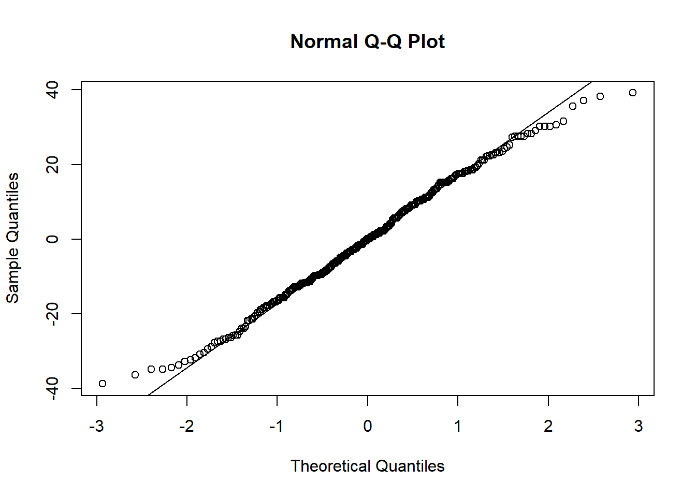

Chapter 4 Pipe natif, within() et with()
La syntaxe de R base peut être rendue plus lisible avec le pipe natif de R |>, ainsi que les fonctions within() et with().
Nous allons reprendre les éléments de l’analyse réalisée au chapitre 3 en utilisant cette syntaxe complémentaire.
Commençons par supprimer l’ensemble des éléments de l’environnement, puis importons à nouveau les bases df_1 et meta_df_1 :
### Vider l'environnement
rm(list = ls())
### Importer df_1 et meta_df_1
df_1 <- read.csv2("data/df_1.csv")
meta_df_1 <- read.csv2("data/meta_df_1.csv")4.1 Pipe natif de R
Le principe du “pipe” est une syntaxe de programmation qui a été initialement introduite avec le package maggritr au sein de la famille de packages du “tidyverse”. Ce principe a été repris dans R base à partir de sa version 4.1.0.
Le pipe natif s’écrit avec une barre verticale suivi d’un signe supérieur |>.
La syntaxe est la suivante :
- L’élément qui se site à gauche du pipe (LHS, left hand side) …
- … est transmis au premier argument de la fonction à droite du pipe (RDS, right hand side).
x |> funct(arguments = ...) est équivalent à funct(x, argument = ...)
Par exemple :
## subjid sex imc trait pas
## 1 1 0 24.8 2 140
## 2 2 0 24.1 3 109
## 3 3 0 26.4 1 156
## 4 4 0 23.3 2 124
## 5 5 0 25.4 2 131
## 6 6 1 25.0 3 148## subjid sex imc trait pas
## 295 295 1 24.1 1 148
## 296 296 0 18.7 3 121
## 297 297 0 23.3 3 111
## 298 298 1 27.5 3 134
## 299 299 1 24.7 2 158
## 300 300 1 22.8 1 147## 'data.frame': 300 obs. of 5 variables:
## $ subjid: int 1 2 3 4 5 6 7 8 9 10 ...
## $ sex : int 0 0 0 0 0 1 0 0 0 0 ...
## $ imc : num 24.8 24.1 26.4 23.3 25.4 25 25.2 21.5 21.8 25.9 ...
## $ trait : int 2 3 1 2 2 3 3 3 1 1 ...
## $ pas : int 140 109 156 124 131 148 125 117 132 133 ...Cela permet d’avoir un code dont la décomposition est plus lisible, en enchaînant les pipes les uns après les autres :
## [1] 24.5# on peut écrire, de manière équivalente, avec 2 pipes qui s'enchaînent :
df_1$imc |>
mean(na.rm = TRUE) |>
round(digits = 1)## [1] 24.5# df_1$imc a été pris comme premier argument de mean(x, na.rm = TRUE)
# puis le résultat a été pris comme premier argument de round(x, digits = 1)Au lieu de “transférer” l’élément à gauche du pipe au premier argument de la fonction à droite du pipe, il est possible de le transférer à n’importe quel argument à droite du pipe à l’aide du “placeholder” _ (underscore).
x |> funct(y, argument = _) est équivalent à funct(y, argument = x). Par exemple :
## [1] "la moyenne de l'IMC est 24.5 kg/m2"### on peut placer le résultat de la moyenne arrondi en 2ème position des
### arguments dans la fonction paste0() avec le placeholder "_"
df_1$imc |>
mean(na.rm = TRUE) |>
round(digits = 1) |>
paste0("la moyenne de l'IMC est ",
a = _, # argument = placeholder
" kg/m2")## [1] "la moyenne de l'IMC est 24.5 kg/m2"4.2 Fonction within() : créer/modifier des variables dans une base de données
La fonction within() permet d’éviter d’utiliser l’opérateur dollar $ lorsque vous souhaitez :
- créer de nouvelles variables dans une base de données,
- modifier des variables déjà existantes,
- transformer les données selon des tâches spécifiques.
La syntaxe within(df, newvar <- ...) va créer la variable newvar dans la base df. Pour sauvegarder cette nouvelle variable dans la base, il faudra assigner le résultat à la base souhaitée :
df_1 <- within(df_1,
sexL <- factor(sex,
labels = meta_df_1$labs[meta_df_1$var == "sex"]))
### est équivalent :
# df_1$sexL <- factor(df_1$sex,
# labels = meta_df_1$labs[meta_df_1$var == "sex"])On peut créer plusieurs variables en même temps, en indiquant l’ensemble des commandes entre parenthèses (note : les variables sont incluses dans l’ordre inverse de création dans la commande) :
df_1 <- within(df_1, {
sexL <- factor(sex,
labels = meta_df_1$labs[meta_df_1$var == "sex"])
traitL <- factor(trait,
labels = meta_df_1$labs[meta_df_1$var == "trait"])
obesite <- ifelse(imc >= 30, 1, 0)
imc_cl <- rep(NA, nrow(df_1))
imc_cl[df_1$imc < 18.5] <- 1
imc_cl[df_1$imc >= 18.5 & df_1$imc < 25] <- 2
imc_cl[df_1$imc >= 25 & df_1$imc < 30] <- 3
imc_cl[df_1$imc >= 30] <- 4
})
head(df_1)## subjid sex imc trait pas sexL imc_cl obesite traitL
## 1 1 0 24.8 2 140 Féminin 2 0 Traitement A
## 2 2 0 24.1 3 109 Féminin 2 0 Traitement B
## 3 3 0 26.4 1 156 Féminin 3 0 Placebo
## 4 4 0 23.3 2 124 Féminin 2 0 Traitement A
## 5 5 0 25.4 2 131 Féminin 3 0 Traitement A
## 6 6 1 25.0 3 148 Masculin 3 0 Traitement BOn voit que l’opérateur dollar $ n’a été utilisé que pour aller récupérer l’information des labels dans la base de méta-données, ainsi que pour la sélection par indexation pour créer la variable imc_cl.
On peut également modifier une variable (l’opérateur dollar $ n’est utilisé que pour la sélection par indexation):
4.3 Fonction with() : analyser des variables dans une base de données
La fonction with() permet d’éviter d’utiliser l’opérateur $ lorsque l’on souhaite :
- faire des calculs statistiques appliqués aux variables d’une base de données
- faire des calculs temporaires (quand il n’y a pas besoin de modifier les données de manière permanente)
Par exemple, pour calculer la moyenne de l’IMC dans la base df_1 :
## [1] 24.481## [1] 24.481On peut combiner la fonction with() avec le pipe natif :
# la commande suivante ...
paste0("la moyenne de l'IMC est égale à ",
round(mean(df_1$imc, na.rm = TRUE),
digits = 1),
" kg/m2")## [1] "la moyenne de l'IMC est égale à 24.5 kg/m2"# ... est équivalente à ...
with(df_1,
imc |>
mean(na.rm = TRUE) |>
round(digits = 1) |>
paste0("la moyenne de l'IMC est égale à ",
a = _, # résultat positionné avec le "placeholder" underscore
" kg/m2"))## [1] "la moyenne de l'IMC est égale à 24.5 kg/m2"4.4 Exemples d’applications
Nous pouvons utiliser ces éléments de syntaxe pour les analyses réalisées au chapitre 2.
### On reprend notre fonction "maison" d'analyse quantitative univariée
univ_quanti <- function(x, dig = 2, remove_miss = TRUE, details = TRUE) {
# calculer les effectifs, la moyenne, l'écart type et les quantiles
n <- length(x[!is.na(x)])
moy <- mean(x, na.rm = remove_miss)
sd <- sd(x, na.rm = remove_miss)
q <- quantile(x, probs = c(0, 0.25, 0.5, 0.75, 1), na.rm = remove_miss)
# stocker les résultat dans le vecteur "param"
if (details == TRUE) {
param <- c(n,
round(moy, digits = dig),
round(sd, digits = dig),
q)
} else {
param <- c(n,
round(moy, digits = dig),
round(sd, digits = dig))
}
# ajouter un nom à chaque élément du vecteur
if (details == TRUE) {
names(param) <- c("N", "mean", "sd", "min", "Q1", "median", "Q3", "max")
} else {
names(param) <- c("N", "mean", "sd")
}
# retourne les résultats
return(param)
}4.4.1 Analyses univariées
Pour les variables quantitatives IMC et PAS :
with(df_1,
# pour des analyses répétées sur plusieurs élémnets de df_1,
# on peut les stocker dans une liste
list(IMC = univ_quanti(imc, dig = 1, remove_miss = TRUE, details = TRUE),
PAS = univ_quanti(pas, dig = 1, remove_miss = TRUE, details = TRUE))
)## $IMC
## N mean sd min Q1 median Q3 max
## 300.0 24.5 3.1 15.4 22.3 24.6 26.4 32.5
##
## $PAS
## N mean sd min Q1 median Q3 max
## 300.0 137.1 16.8 92.0 125.0 138.0 149.0 177.0Pour les variables qualitatives (dans leur format de facteurs sexL et traitL) :
with(df_1,
list(SEX = cbind(N = table(sexL),
pct = round(prop.table(table(sexL)) * 100, digits = 1),
deparse.level = 2), # ajoute les noms de colonnes
TRAITEMENT = cbind(N = table(traitL),
pct = round(prop.table(table(traitL)) * 100,
digits = 1),
deparse.level = 2)))## $SEX
## N pct
## Féminin 153 51
## Masculin 147 49
##
## $TRAITEMENT
## N pct
## Placebo 120 40.0
## Traitement A 91 30.3
## Traitement B 89 29.74.4.2 Analyses bivariées
4.4.2.1 Comparer deux moyennes
Comparer la PAS en fonction du sexe :
### Tableau descriptif bi-varié
with(df_1,
pas |>
aggregate(by = list(sexL),
FUN = univ_quanti, # fonction à utiliser
dig = 1, remove_miss = TRUE, details = FALSE)) ## Group.1 x.N x.mean x.sd
## 1 Féminin 153.0 132.4 16.8
## 2 Masculin 147.0 142.0 15.5##
## Welch Two Sample t-test
##
## data: pas by sexL
## t = -5.1382, df = 297.44, p-value = 5.029e-07
## alternative hypothesis: true difference in means between group Féminin and group Masculin is not equal to 0
## 95 percent confidence interval:
## -13.233087 -5.903634
## sample estimates:
## mean in group Féminin mean in group Masculin
## 132.4248 141.9932### On peut récupérer uniquement la p-value
# rappel : la p-value peut être récupéré avec l'opérateur dollar $
# appliqué au résultat de la fonction t.test
with(with(df_1,
t.test(pas ~ sexL)),
p.value)## [1] 5.028976e-07### Test de Levene pour vérifier l'égalité des variances
with(df_1,
pas |> car::leveneTest(group = sexL))## Levene's Test for Homogeneity of Variance (center = median)
## Df F value Pr(>F)
## group 1 1.0178 0.3139
## 298### Test de Wilcoxon si les conditions d'application ne sont pas vérifiées
with(df_1,
wilcox.test(pas ~ sexL))##
## Wilcoxon rank sum test with continuity correction
##
## data: pas by sexL
## W = 7609.5, p-value = 1.29e-06
## alternative hypothesis: true location shift is not equal to 04.4.2.2 Comparer 3 moyennes ou plus
Comparer la PAS en fonction du traitement :
### Tableau descriptif bi-varié
with(df_1,
pas |>
aggregate(by = list(traitL),
FUN = univ_quanti, # fonction à utiliser
dig = 1, remove_miss = TRUE, details = FALSE)) ## Group.1 x.N x.mean x.sd
## 1 Placebo 120.0 141.4 15.6
## 2 Traitement A 91.0 130.7 16.4
## 3 Traitement B 89.0 137.8 17.0### appliquer le test d'Anova au modèle linéaire pas ~ traitL
with(df_1,
lm(pas ~ traitL) |>
anova())## Analysis of Variance Table
##
## Response: pas
## Df Sum Sq Mean Sq F value Pr(>F)
## traitL 2 5940 2970.18 11.215 2.016e-05 ***
## Residuals 297 78656 264.83
## ---
## Signif. codes: 0 '***' 0.001 '**' 0.01 '*' 0.05 '.' 0.1 ' ' 1### Vérification des conditions d'applications
### 1) égalité des variances par le test de Levene
with(df_1,
pas |> car::leveneTest(group = traitL))## Levene's Test for Homogeneity of Variance (center = median)
## Df F value Pr(>F)
## group 2 0.6669 0.514
## 297### 2) normalité des résidus du modèle linéaire
res <- with(with(df_1, lm(pas ~ traitL)),
residuals)
qqnorm(res)
qqline(res)
### Réaliser un test de Kruskal-Wallis si les conditions ne sont pas vérifiées
with(df_1,
kruskal.test(pas ~ traitL))##
## Kruskal-Wallis rank sum test
##
## data: pas by traitL
## Kruskal-Wallis chi-squared = 19.04, df = 2, p-value = 7.336e-054.4.2.3 Comparer des pourcentages
Description de la répartition du sexe en fonction du traitement, et application du test du Chi-2.
### Tableau descriptif bivarié
with(df_1,
paste0(table(sexL, traitL),
" (",
round(prop.table(table(sexL, trait), margin = 2) * 100,
digits = 1),
"%)") |>
matrix(nrow = 2, ncol = 3, byrow = FALSE,
dimnames = dimnames(table(sexL, traitL))))## traitL
## sexL Placebo Traitement A Traitement B
## Féminin "57 (47.5%)" "46 (50.5%)" "50 (56.2%)"
## Masculin "63 (52.5%)" "45 (49.5%)" "39 (43.8%)"##
## Pearson's Chi-squared test
##
## data: table(sexL, traitL)
## X-squared = 1.5512, df = 2, p-value = 0.4604## traitL
## sexL Placebo Traitement A Traitement B
## Féminin 61.2 46.41 45.39
## Masculin 58.8 44.59 43.614.4.2.4 Corrélations
Estimation des corrélations de Pearson et de Spearman, avec test de leurs hypothèse nulles \(\rho = 0\).
##
## Pearson's product-moment correlation
##
## data: imc and pas
## t = 3.8534, df = 298, p-value = 0.0001427
## alternative hypothesis: true correlation is not equal to 0
## 95 percent confidence interval:
## 0.1072647 0.3231284
## sample estimates:
## cor
## 0.2178593## Warning in cor.test.default(imc, pas, method = "spearman"): Impossible de
## calculer la p-value exacte avec des ex-aequos##
## Spearman's rank correlation rho
##
## data: imc and pas
## S = 3522826, p-value = 0.0001503
## alternative hypothesis: true rho is not equal to 0
## sample estimates:
## rho
## 0.2171414.4.3 Analyse multivariée
Estimation de la régression linéaire multiple de la PAS en fonction du traitement, ajusté sur le sexe et l’IMC :
##
## Call:
## lm(formula = pas ~ traitL + sexL + imc)
##
## Residuals:
## Min 1Q Median 3Q Max
## -38.871 -10.083 -0.342 10.941 41.171
##
## Coefficients:
## Estimate Std. Error t value Pr(>|t|)
## (Intercept) 109.5668 7.1403 15.345 < 2e-16 ***
## traitLTraitement A -10.9623 2.1246 -5.160 4.55e-07 ***
## traitLTraitement B -2.8373 2.1374 -1.327 0.185388
## sexLMasculin 8.5634 1.7796 4.812 2.39e-06 ***
## imc 1.1240 0.2904 3.870 0.000134 ***
## ---
## Signif. codes: 0 '***' 0.001 '**' 0.01 '*' 0.05 '.' 0.1 ' ' 1
##
## Residual standard error: 15.24 on 295 degrees of freedom
## Multiple R-squared: 0.1902, Adjusted R-squared: 0.1792
## F-statistic: 17.32 on 4 and 295 DF, p-value: 8.911e-13